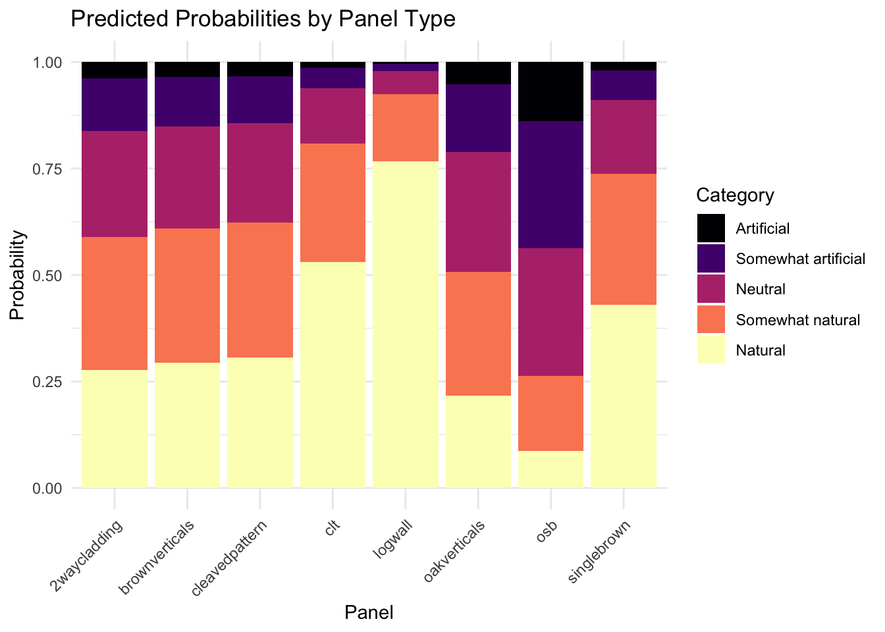
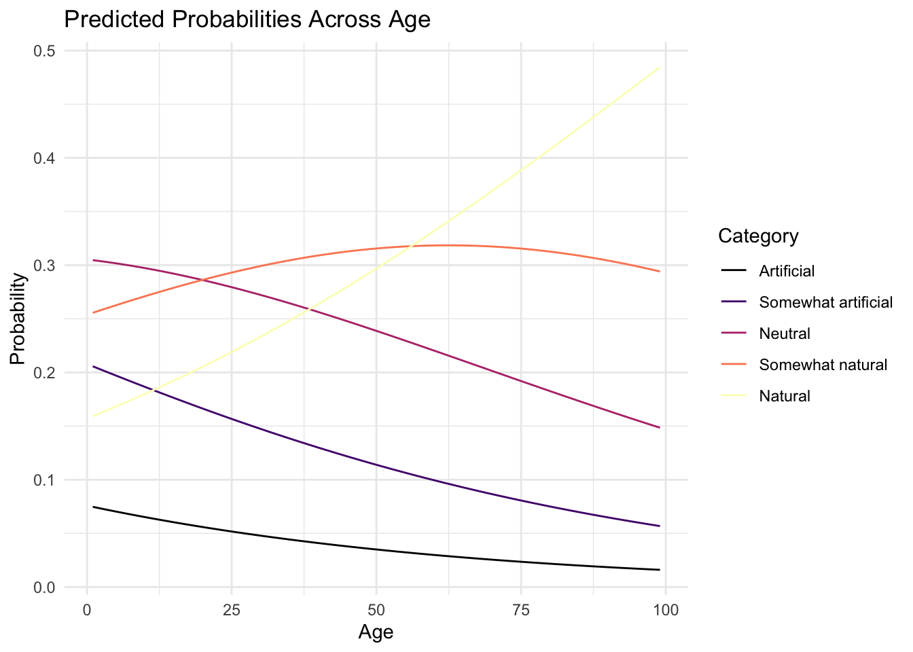
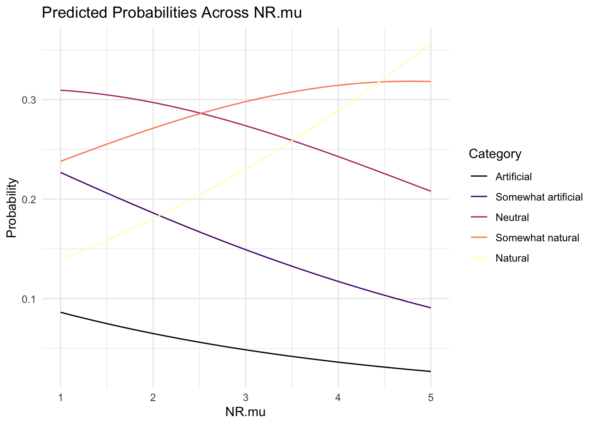
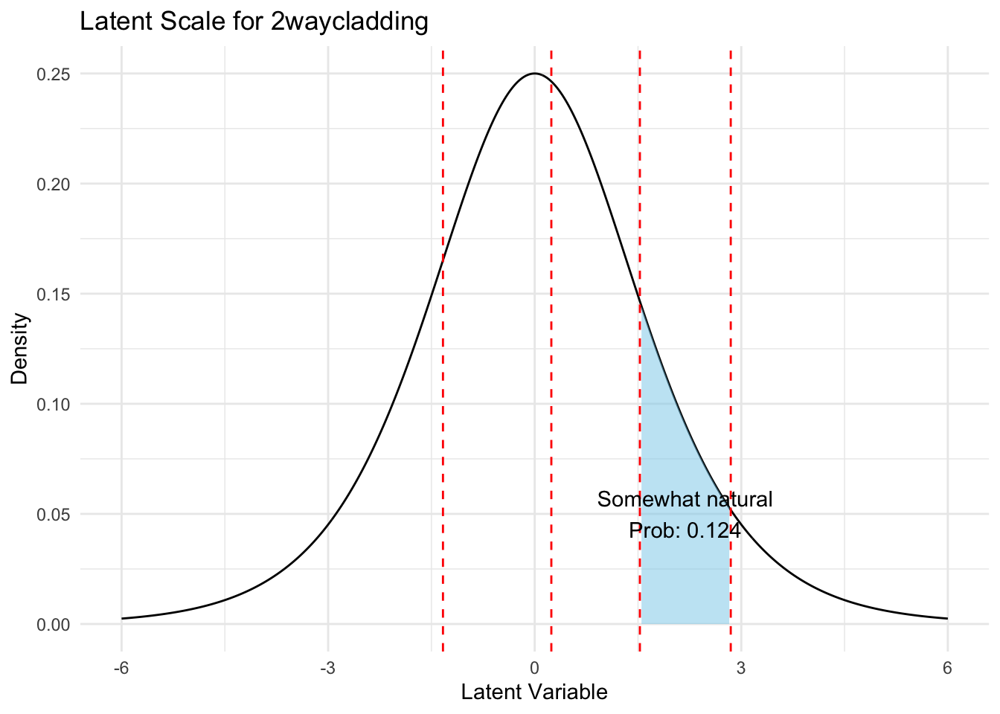
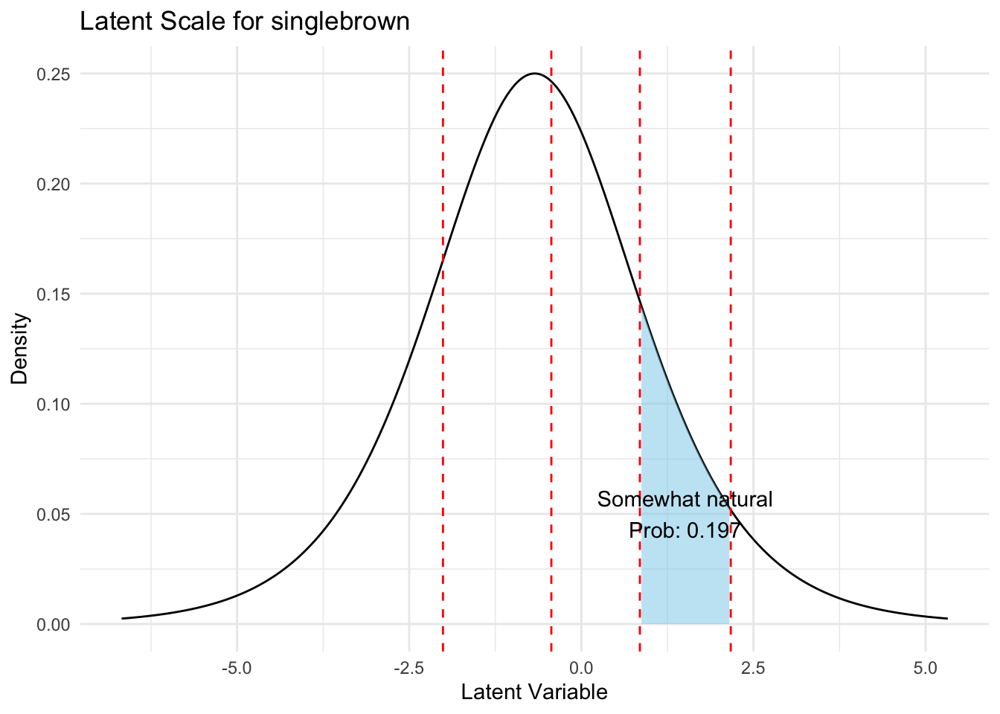
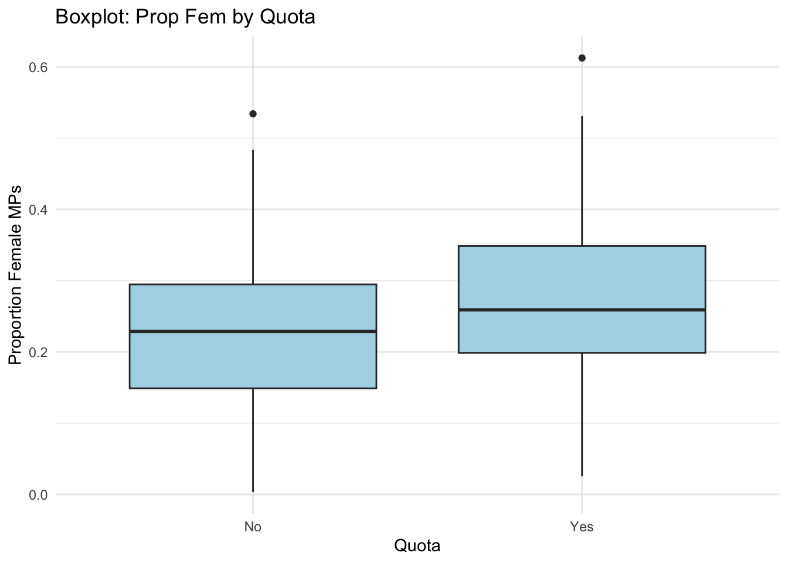
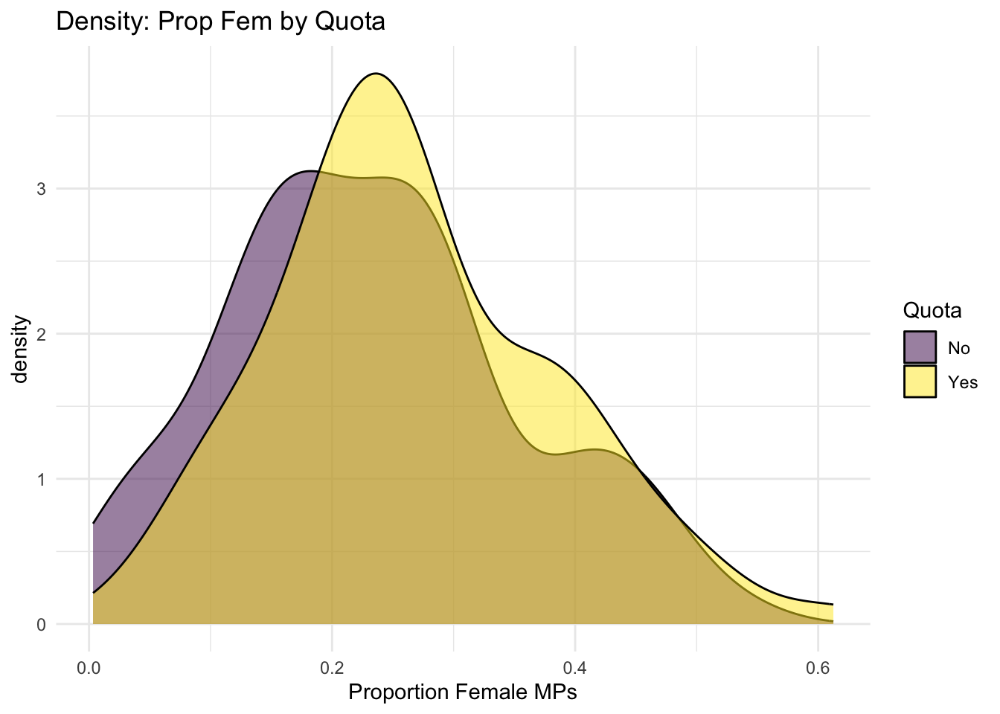
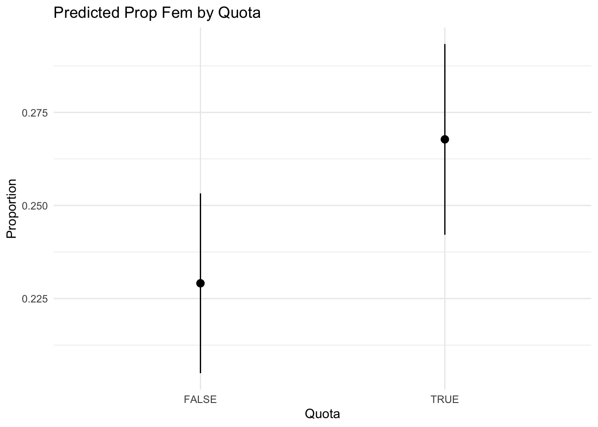
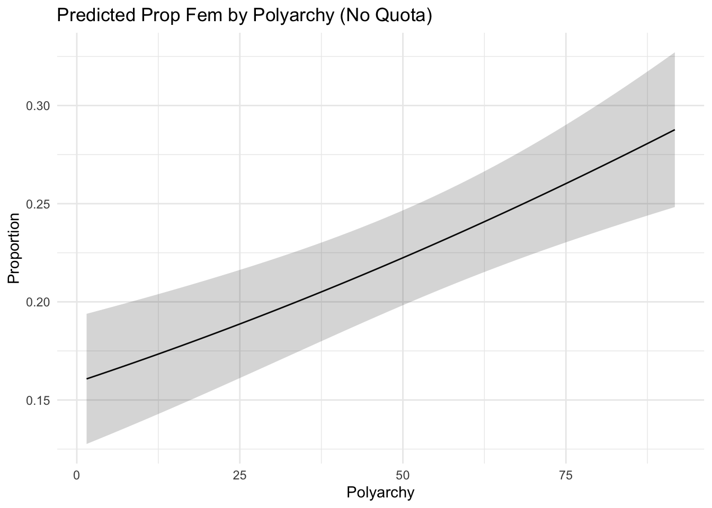

Step 1: Rename this file as follows: “DSP1-HW3-Name-StudentID” with your name and student ID replacing the appropriate parts. Step 2: Update the author field in the YAML as indicated. Step 3: Ensure the document has a Table of Contents when rendered (hint: you set this in the YAML) Step 3: Complete to the Tasks below. Be sure to add meaningful label tags to each R code chunk and structure your analysis sensibly. Step 4: Render to html or pdf (you may need to change target formats in the YAML) Step 5: Zip (or otherwise compress) the html other relevant support folders and include this qmd file with your work filled in Step 6: Submit the compressed folder which should be named “DSP1-HW3-Name-StudentID” through the e-classroom by Tuesday 6 January 2026.
Hint: Make sure that when I open the html file I can view all the embedded images, see all your code and easily identify your responses to questions.
Note: Please see the rules for using AI on the e-classroom.
Ordinal regression and beta regression
This homework will cover two regression types: logistic and ordinal regression.
Ordinal regression
A recent survey asked respondents to rate wood wall panels they viewed on a several semantic differential scales. These scales use two adjectives with opposite meanings and ask respondents to describe some stimuli by selecting a point on the scale between the two adjectives.
In this case, the scale was between artificial and natural with the following ordered categories:
The data set “artificial_natural.csv” includes a numeric version of this scale (-2 to 2) and a character version.
Fit a an ordinal regression model that uses the character version of the scale (“labs” in the data provided) as the dependent variable and Panel (8 level categorical), Age (numeric, continuous), and NR.mu (numeric, continuous) as the predictor variables. Use a logit link function. “labs” will need to be converted to an ordered factor with the factors in the correct order as above. The other variables are self explanatory enough, but NR.mu is the mean score of the items on the nature relatedness scale NR-6 version.
Are there differences in ratings between panel types? Provide a text explanation and visualisation that illustrates the differences on the probability scale.
What is the effect of age? Is it meaningful? Provide a text explanation and a visualisation to explain the outcome.
Does nature relatedness have an effect? Provide a text explanation and a visualisation to explain the outcome.
Create a visualisation of the boundaries between artificial-natural scale categories overlaid on a logistic distribution for the 2waycladding panel (baseline unless you change something) and the singlebrown panel (two separate visualisations are ok) In each, highlight the probability of selecting “somewhat natural” by using a fill between the boundaries for that category and label of the probability of selecting that category.
Refit the model using a probit link. State which model you prefer between the logit and probit model and why. (Refer to the Bürkner and Vuorre (2019) reading on the e-classroom for support.)
setup
library(tidyverse)
── Attaching core tidyverse packages ──────────────────────── tidyverse 2.0.0 ──
✔ dplyr 1.1.4 ✔ readr 2.1.5
✔ forcats 1.0.1 ✔ stringr 1.5.1
✔ ggplot2 4.0.0 ✔ tibble 3.3.0
✔ lubridate 1.9.4 ✔ tidyr 1.3.1
✔ purrr 1.1.0
── Conflicts ────────────────────────────────────────── tidyverse_conflicts() ──
✖ dplyr::filter() masks stats::filter()
✖ dplyr::lag() masks stats::lag()
ℹ Use the conflicted package (<http://conflicted.r-lib.org/>) to force all conflicts to become errors
library(ordinal)
Attaching package: 'ordinal'
The following object is masked from 'package:dplyr':
slice
library(viridis)
Loading required package: viridisLite
library(emmeans)
Welcome to emmeans.
Caution: You lose important information if you filter this package's results.
See '? untidy'
Rows: 2387 Columns: 5
── Column specification ────────────────────────────────────────────────────────
Delimiter: ","
chr (2): Panel, labs
dbl (3): Value, Age, NR.mu
ℹ Use `spec()` to retrieve the full column specification for this data.
ℹ Specify the column types or set `show_col_types = FALSE` to quiet this message.
To assess differences, we examine the coefficients for each Panel level relative to the baseline (2waycladding). Significant p-values indicate differences. Positive coefficients suggest a shift towards more “Natural” ratings.
newdata_panel <-expand_grid(Panel =unique(d.an$Panel), Age =mean(d.an$Age, na.rm =TRUE), NR.mu =mean(d.an$NR.mu, na.rm =TRUE))preds_panel <-predict(model.logit, newdata = newdata_panel, type ="prob")$fitnewdata_panel <-cbind(newdata_panel, preds_panel) %>%pivot_longer(cols =all_of(an_levels), names_to ="Category", values_to ="Probability") %>%mutate(Category =factor(Category, levels = an_levels))ggplot(newdata_panel, aes(x = Panel, y = Probability, fill = Category)) +geom_col(position ="stack") +scale_fill_viridis_d(option ="magma") +theme_minimal() +labs(title ="Predicted Probabilities by Panel Type", y ="Probability", x ="Panel") +theme(axis.text.x =element_text(angle =45, hjust =1))

Panels such as “logwall” and “clt” have significant positive coefficients, indicating they are perceived as more natural compared to the baseline “2waycladding”.
For “singlebrown” also shows a positive effect . Conversely, “osb” and “oakverticals” have significant negative coefficients, suggesting more artificial perceptions.
For “brownverticals” and “cleavedpattern” are not significantly different from the baseline.
The visualization shows probability distributions across categories for each panel, holding Age and NR.mu at their means.
Effect of Age
The coefficient for Age is 0.0163 with p-value 7.19e-11, indicating a significant positive effect. Older participants tend to rate panels as more natural.
Is it meaningful? The effect size is small (0.016 per year), but statistically significant, suggesting a gradual shift towards more natural perceptions with increasing age.
newdata_age <-expand_grid(Age =seq(min(d.an$Age, na.rm =TRUE), max(d.an$Age, na.rm =TRUE), length.out =50),Panel ="2waycladding", # BaselineNR.mu =mean(d.an$NR.mu, na.rm =TRUE))preds_age <-predict(model.logit, newdata = newdata_age, type ="prob")$fitnewdata_age <-cbind(newdata_age, preds_age) %>%pivot_longer(cols =all_of(an_levels), names_to ="Category", values_to ="Probability") %>%mutate(Category =factor(Category, levels = an_levels))# plotting ggplot(newdata_age, aes(x = Age, y = Probability, color = Category, group = Category)) +geom_line() +scale_color_viridis_d(option ="magma") +theme_minimal() +labs(title ="Predicted Probabilities Across Age", y ="Probability")

Effect of Nature Relatedness (NR.mu)
The coefficient for NR.mu is 0.307 with p-value 5.53e-09, showing a significant positive effect. Higher nature relatedness leads to more “Natural” ratings.
newdata_nr <-expand_grid(NR.mu =seq(min(d.an$NR.mu, na.rm =TRUE), max(d.an$NR.mu, na.rm =TRUE), length.out =50),Panel ="2waycladding",Age =mean(d.an$Age, na.rm =TRUE))preds_nr <-predict(model.logit, newdata = newdata_nr, type ="prob")$fitnewdata_nr <-cbind(newdata_nr, preds_nr) %>%pivot_longer(cols =all_of(an_levels), names_to ="Category", values_to ="Probability") %>%mutate(Category =factor(Category, levels = an_levels))ggplot(newdata_nr, aes(x = NR.mu, y = Probability, color = Category, group = Category)) +geom_line() +scale_color_viridis_d(option ="magma") +theme_minimal() +labs(title ="Predicted Probabilities Across NR.mu", y ="Probability")

Visualization of Boundaries
For the logit link, we plot the logistic density with thresholds. Highlight “Somewhat natural” (between tau[3] and tau[4]).
For 2waycladding (baseline, no shift).
tau <- model.logit$alphalatent_df <-tibble(x =seq(-6, 6, length.out =500)) %>%mutate(y =dlogis(x))prob_sn <-plogis(tau[4]) -plogis(tau[3])ggplot(latent_df, aes(x = x, y = y)) +geom_line() +geom_vline(xintercept = tau, linetype ="dashed", color ="red") +geom_area(data =filter(latent_df, x > tau[3] & x < tau[4]), aes(y = y), fill ="skyblue", alpha =0.5) +annotate("text", x = (tau[3] + tau[4])/2, y =0.05, label =paste("Somewhat natural\nProb:", round(prob_sn, 3))) +theme_minimal() +labs(title ="Latent Scale for 2waycladding", x ="Latent Variable", y ="Density")

For singlebrown: Shift by its coefficient.
coef_sb <-coef(model.logit)["Panelsinglebrown"]latent_df_sb <-tibble(x =seq(-6, 6, length.out =500)) %>%mutate(y =dlogis(x), x_shifted = x - coef_sb) # Shift left if positive coef (towards more natural)prob_sn_sb <-plogis(tau[4] - coef_sb) -plogis(tau[3] - coef_sb)ggplot(latent_df_sb, aes(x = x_shifted, y = y)) +geom_line() +geom_vline(xintercept = tau - coef_sb, linetype ="dashed", color ="red") +geom_area(data =filter(latent_df_sb, x_shifted > tau[3] - coef_sb & x_shifted < tau[4] - coef_sb), aes(y = y), fill ="skyblue", alpha =0.5) +annotate("text", x = (tau[3] + tau[4])/2- coef_sb, y =0.05, label =paste("Somewhat natural\nProb:", round(prob_sn_sb, 3))) +theme_minimal() +labs(title ="Latent Scale for singlebrown", x ="Latent Variable", y ="Density")

Probit Model and Comparison
model.probit <-clm(labs ~ Panel + Age + NR.mu, data = d.an, link ="probit")summary(model.probit)
I prefer the Logit model. Not only is the AIC lower (6248.22 vs 6253.99), indicating a better statistical fit, but the logit link is also more interpretable in psychology. Following Bürkner and Vuorre (2019), the logit model allows us to interpret the coefficients as Odds Ratios. For example, the nature relatedness (NR.mu) estimate of 0.307 implies that for every 1-unit increase in nature relatedness, the odds of a respondent moving to a ‘more natural’ category increase by approximately 36% (\(e^{0.307} \approx 1.36\)
Beta regression
Use the attached data about democracy worldwide. It is a subset from the (Varieties of Democracy)[https://www.v-dem.net] project (V-Dem). You will model the proportion of female (prop_fem) members of parliament (MP) with different predictors.
The data is in the “vdem_2020_subset.csv” file.
Visualise the proportion of women in parliament based on quota in two different ways.
Fit a beta regression with prop_fem as the response variable with quota and polyarchy (degree of democracy) as predictor variables.
Visualise the proportion of women MPs based on quota
Visualise the proportion of women MPs based on polyarchy
Write a brief explanation of the outcomes, refer to previous visualisations or create new ones to help with the explanation.
Rows: 170 Columns: 9
── Column specification ────────────────────────────────────────────────────────
Delimiter: ","
chr (2): country_name, country_text_id
dbl (6): year, region, polyarchy, corruption, civil_liberties, prop_fem
lgl (1): quota
ℹ Use `spec()` to retrieve the full column specification for this data.
ℹ Specify the column types or set `show_col_types = FALSE` to quiet this message.
summary(d.vdem)
country_name country_text_id year region
Length:170 Length:170 Min. :2020 Min. :1.000
Class :character Class :character 1st Qu.:2020 1st Qu.:2.000
Mode :character Mode :character Median :2020 Median :4.000
Mean :2020 Mean :3.518
3rd Qu.:2020 3rd Qu.:5.000
Max. :2020 Max. :6.000
polyarchy corruption civil_liberties prop_fem
Min. : 1.50 Min. :0.0020 Min. :0.0240 Min. :0.0033
1st Qu.:28.95 1st Qu.:0.1910 1st Qu.:0.4985 1st Qu.:0.1669
Median :53.05 Median :0.5215 Median :0.7645 Median :0.2402
Mean :51.76 Mean :0.4861 Mean :0.6786 Mean :0.2502
3rd Qu.:75.85 3rd Qu.:0.7665 3rd Qu.:0.8860 3rd Qu.:0.3180
Max. :91.70 Max. :0.9620 Max. :0.9630 Max. :0.6125
quota
Mode :logical
FALSE:85
TRUE :85
Proportion of Women in Parliament by Quota
Way 1: Boxplot
ggplot(d.vdem, aes(x =factor(quota, labels =c("No", "Yes")), y = prop_fem)) +geom_boxplot(fill ="lightblue") +theme_minimal() +labs(title ="Boxplot: Prop Fem by Quota", x ="Quota", y ="Proportion Female MPs")

Way 2: Density Plot
ggplot(d.vdem, aes(x = prop_fem, fill =factor(quota, labels =c("No", "Yes")))) +geom_density(alpha =0.5) +scale_fill_viridis_d() +theme_minimal() +labs(title ="Density: Prop Fem by Quota", x ="Proportion Female MPs", fill ="Quota")

Fit Beta Regression Model
model.beta <-betareg(prop_fem ~ quota + polyarchy, data = d.vdem)summary(model.beta)
Call:
betareg(formula = prop_fem ~ quota + polyarchy, data = d.vdem)
Quantile residuals:
Min 1Q Median 3Q Max
-3.3270 -0.5050 0.0284 0.6576 2.8119
Coefficients (mean model with logit link):
Estimate Std. Error z value Pr(>|z|)
(Intercept) -1.665081 0.127756 -13.033 < 2e-16 ***
quotaTRUE 0.232163 0.096048 2.417 0.0156 *
polyarchy 0.008271 0.001908 4.334 1.47e-05 ***
Phi coefficients (precision model with identity link):
Estimate Std. Error z value Pr(>|z|)
(phi) 12.01 1.27 9.453 <2e-16 ***
---
Signif. codes: 0 '***' 0.001 '**' 0.01 '*' 0.05 '.' 0.1 ' ' 1
Type of estimator: ML (maximum likelihood)
Log-likelihood: 130 on 4 Df
Pseudo R-squared: 0.1073
Number of iterations: 14 (BFGS) + 2 (Fisher scoring)
Proportion by Quota
Predicted proportions for each quota level, holding polyarchy at mean.
preds_quota <-predictions(model.beta, by ="quota")preds_quota_df <-as.data.frame(preds_quota)ggplot(preds_quota_df, aes(x = quota, y = estimate, ymin = conf.low, ymax = conf.high)) +geom_pointrange() +theme_minimal() +labs(title ="Predicted Prop Fem by Quota", y ="Proportion", x ="Quota")

Proportion by Polyarchy
Predicted proportions across polyarchy range, holding quota at FALSE (no quota).
newdata_poly <-datagrid(model = model.beta,polyarchy =seq(min(d.vdem$polyarchy, na.rm =TRUE), max(d.vdem$polyarchy, na.rm =TRUE), length.out =50),quota =FALSE)preds_poly <-predictions(model.beta, newdata = newdata_poly)ggplot(preds_poly, aes(x = polyarchy, y = estimate)) +geom_line() +geom_ribbon(aes(ymin = conf.low, ymax = conf.high), alpha =0.2) +theme_minimal() +labs(title ="Predicted Prop Fem by Polyarchy (No Quota)", y ="Proportion", x ="Polyarchy")

Explanation of Outcomes
The beta regression model indicates a significant positive effect of having a quota (estimate = 0.232, SE = 0.096, z = 2.417, p = 0.0156), suggesting that countries with gender quotas have a higher proportion of female MPs. Similarly, polyarchy has a significant positive effect (estimate = 0.008, SE = 0.002, z = 4.334, p < 0.001), implying that higher levels of democracy are associated with greater female representation in parliament.
The pseudo R-squared is 0.1073, indicating that the model explains about 10.7% of the variability in the data. The precision parameter phi is estimated at 12.01, which is significant.
Referring to the visualizations: The boxplot and density plots in Question 1 show that countries with quotas tend to have higher and more concentrated proportions of female MPs around higher values compared to those without. The point-range plot in Question 3 illustrates the model-predicted increase in proportion due to quotas, with non-overlapping confidence intervals suggesting a meaningful difference. The line plot in Question 4 demonstrates a gradual positive relationship between polyarchy and female representation, with the confidence band widening at extreme values due to fewer observations. Overall, these results highlight the roles of institutional (quotas) and systemic (democracy) factors in promoting gender equality in political representation.